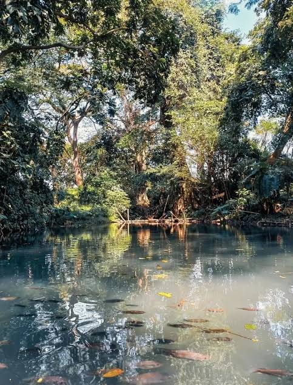
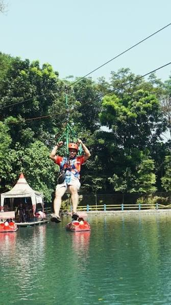
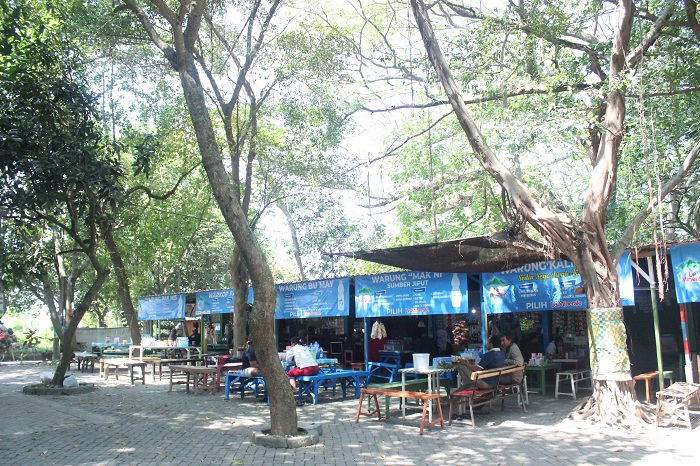
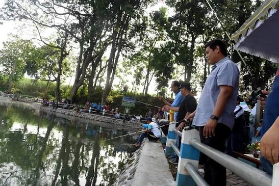
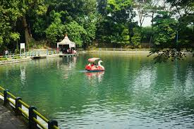

Destinasi wisata alam di Kota Kediri yang menghadirkan suasana asri, udara sejuk, dan pengalaman wisata yang nyaman melalui platform digital SIPUT.
Jelajahi Sekarang
Sumber Jiput merupakan salah satu destinasi wisata alam di Kota Kediri yang dikenal dengan sumber mata airnya yang jernih, suasana yang asri, serta lingkungan yang nyaman untuk bersantai bersama keluarga. Keindahan alam dan fasilitas yang tersedia menjadikan Sumber Jiput sebagai salah satu tujuan rekreasi yang mudah dijangkau oleh masyarakat maupun wisatawan dari luar daerah.
Melalui SIPUT (Sistem Informasi Pariwisata Sumber Jiput), berbagai informasi mengenai lokasi, fasilitas, galeri, peta, serta UMKM lokal dapat diakses secara mudah melalui perangkat digital. Platform ini diharapkan mampu meningkatkan kualitas pelayanan informasi, memperluas promosi wisata, serta mendukung pengembangan pariwisata berkelanjutan di Kota Kediri.
Setiap Hari
05.00 - 18.00 WIB
Kota Kediri
Parkir
Toilet
Musala
Gazebo




Pengunjung dapat melihat berbagai makanan dan minuman khas yang dijual di sekitar Wisata Sumber Jiput.
Website juga membantu promosi produk UMKM agar lebih dikenal masyarakat.
@sumberjiput
sumberjiput@gmail.com
08xxxxxxxxxx